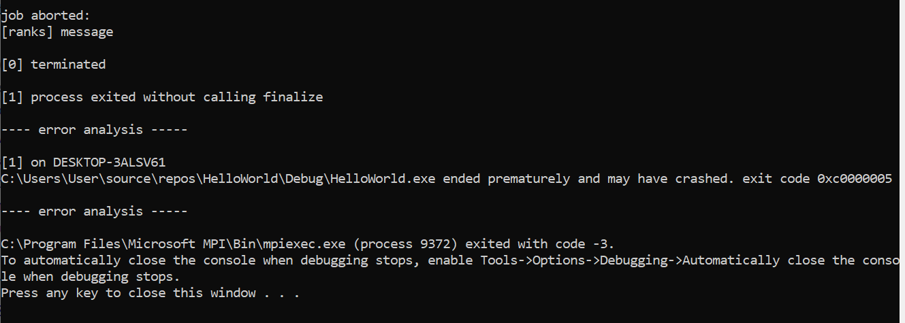

MA nista posebno. Dosta lezerna atmosfera. Demonstriras kod i pitaju te neko simple pitanje cisto reda radi. Ja sam trebao u kodu pokazati sto je blokirajuca funkcija a sto ne a frend morao objasnit razliku izmedu MPI_Iprobe i MPI_Recv. Toeto. Za manje od 5min si gotova
MA pitala me asistentica da pokrenem za 2 i za 5 procesa, malo pogledala ispis i onda me pitala šta radi recv na jednom mjestu u kodu i kako se inicijaliziraju vilice (prvi filozof ima dvije, svaki iduci 1, zadnji 0..) stvarno gotovo za 3 minute
MA kao sta su kolege vec navele dosta lezerno, pita me samo da pokrenem za 2 i za 3 filozofa, pita me di sta provjeravam, kada filozof moze proslijedit svoju vilicu i kako saljem i primam zahtjeve i vilice da pokazem u kodu
jel itko napravio da se iz maina zovu funckije filozof(rank) i da mu linker uporno govori kako ne razumije sta je napisano. Vbaca mi LNK2019 u Visual Studiu i prevede mi primjer helloWorld bez problema al ovo nece. Jel ima itko da je zvao funckije koje su bile filozof i onda odradjivale svoje?
BigZ1 ja nisam tako, ali probaj staviti rank kao globalnu varijablu
Jesu li vec upisali bodove iz labosa negdje?
itsdend meni još nisu
Ima li netko kome i dalje nisu? Wtf
🤡 ma jebeš labos, di su rezultati međuispita više
🤡
Meni isto još nisu
Jel vidite burzu grupa na Ferku za 2. ciklus?
Pokrenem debug, ali stvori se samo jedan filozof, jel moguce vise njih pokrenut? VS 2019, C jezik
sekiro probaj u terminalu pokrenuti program s naredbom “mpiexec.exe -n 5 .\HelloWorld.exe” ako se ne varam ili mozes u njihov .json datotekama prilagoditi da se klikom na debug pokrene ova komanda ovo je iz njihovog primjera samo si prilagodi da pase tvom kodu
 jel ima netko ideju zasto mi ovo baca? konkretno oko Sleep funkcije kad filozof jede se crasha. Ali sam isto skuzio da mi MPI_Iprobe ne uhvati poslane poruke
Smatraju li zadatak pogrešnim ako nam ne radi samo za 2 filozofa?
filip meni je dala 3 boda od 4 na prvoj predaji za takvo rjesenje